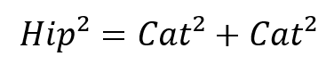

A trigonometria no triângulo retângulo é o estudo sobre os triângulos que possuem um ângulo interno de 90°, chamado de ângulo reto.
Lembre-se que a trigonometria é a ciência responsável pelas relações estabelecidas entre os triângulos. Eles são figuras geométricas planas compostas de três lados e três ângulos internos.
O triângulo chamado equilátero possui os lados com medidas iguais. O isósceles possui dois lados com medidas iguais. Já o escaleno tem os três lados com medidas diferentes.
No tocante aos ângulos dos triângulos, os ângulos internos maiores que 90° são chamados de obtusângulos. Já os ângulos internos menores que 90° são denominados de acutângulos.
Além disso, a soma dos ângulos internos de um triângulo será sempre 180°.
Composição do Triângulo Retângulo
- O triangulo retângulo é formado por:
- Catetos: são os lados do triângulo que formam o ângulo reto. São classificados em: cateto adjacente e cateto oposto.
- Hipotenusa: é o lado oposto ao ângulo reto, sendo considerado o maior lado do triângulo retângulo.
Segundo o Teorema de Pitágoras, a soma dos quadrado dos catetos de um triângulo retângulo é igual ao quadrado de sua hipotenusa:
Relações Trigonométricas do Triângulo Retângulo
As razões trigonométricas são as relações existentes entre os lados de um triângulo retângulo. As principais são o seno, o cosseno e a tangente.

Ângulos notáveis
Os chamados ângulos notáveis são aqueles que aparecem com mais frequência, a saber:
| Relações trigonométricas | 30° | 45° | 60° |
|---|---|---|---|
| Seno | 1/2 | √2/2 | √3/2 |
| Cosseno | √3/2 | √2/2 | 1/2 |
| Tangente | √3/3 | 1 | √3 |